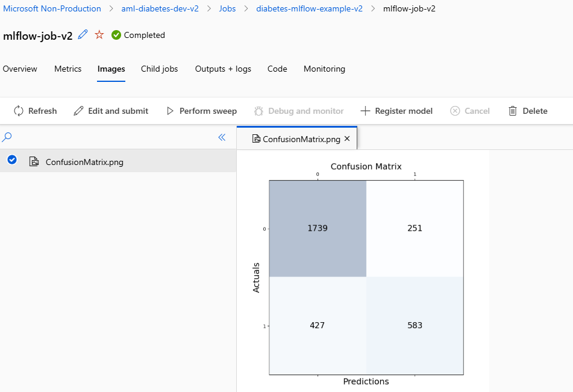
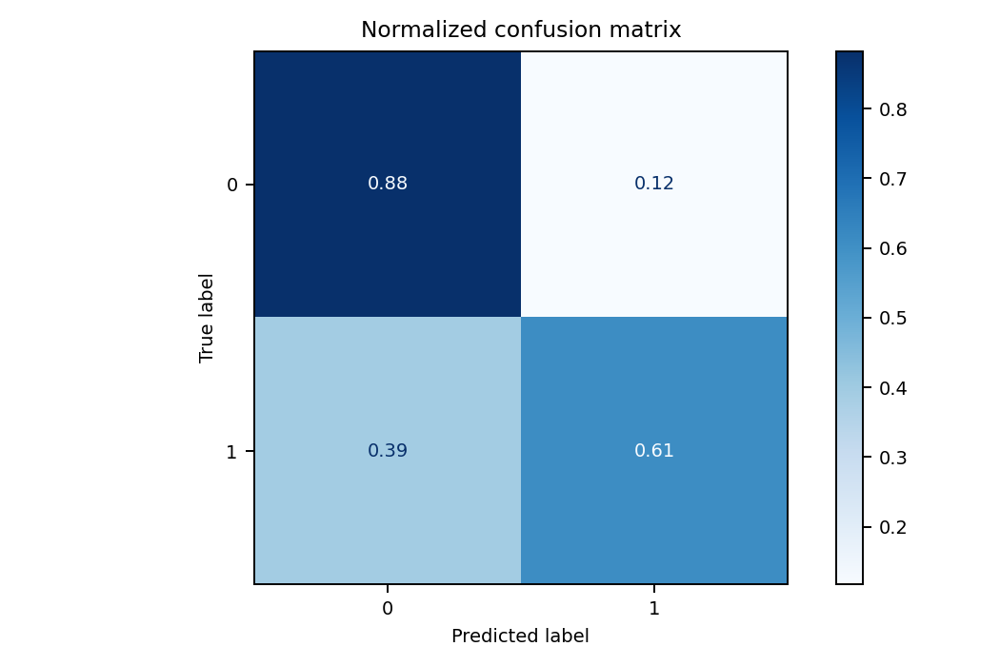
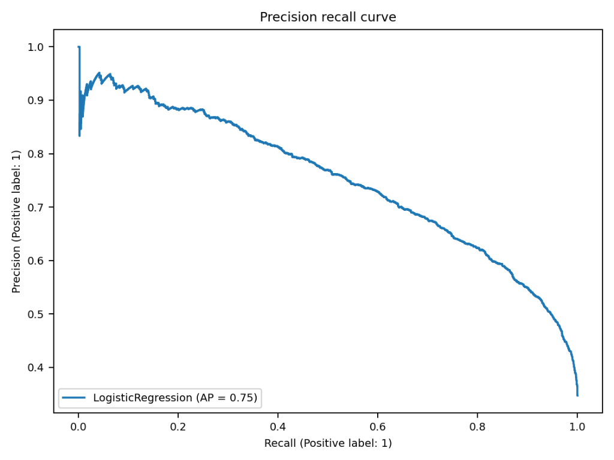
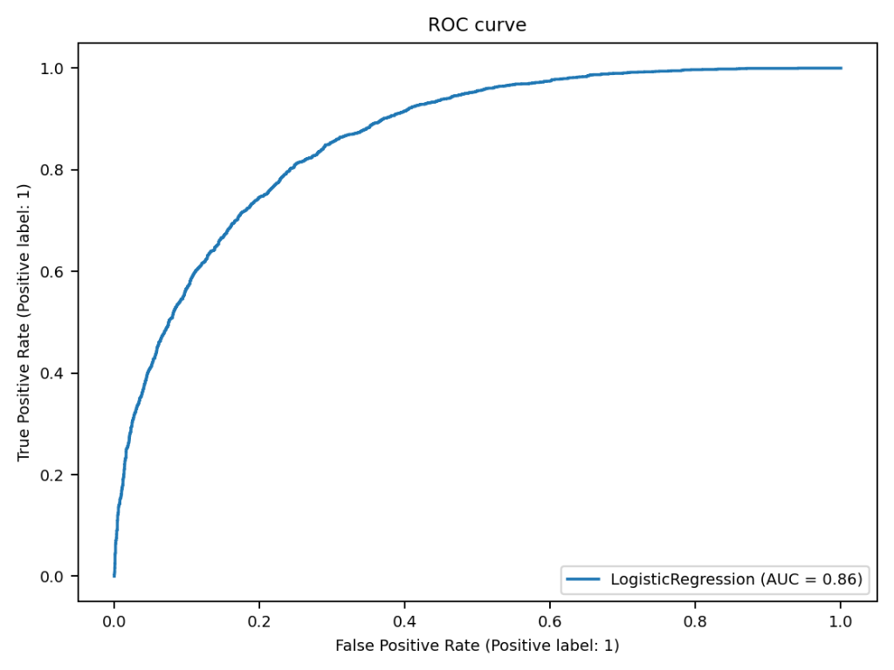

← Back to Google Lab 4 README · View Training Graphs Tutorial · View Plain-English Evaluation Metrics Tutorial · Open Combined Offline Lab Guide
1. Where These Four Charts Come From (The 10,000-Patient Diabetes Dataset)
In Google Lab 4, you compared BigQuery ML's SQL workflow against Azure Machine Learning. When you run the Microsoft Learn exercise Track Azure ML jobs with MLflow (az ml job create --file ./mslearn-aml-cli/Allfiles/Labs/03/mlflow-job/mlflow-job.yml), Python trains a LogisticRegression classifier on a clinical dataset of 10,000 patients (diabetes.csv) with eight features (Pregnancies, PlasmaGlucose, DiastolicBloodPressure, TricepsThickness, SerumInsulin, BMI, DiabetesPedigree, Age) to predict whether a patient is Non-Diabetic (0) or Diabetic (1).
Before training, the script splits the 10,000 patients using train_test_split(X, y, test_size=0.30, random_state=0):
- 70% (7,000 patients) are used to train the Logistic Regression model.
- 30% (3,000 unseen patients) are held back as the exam (test set) to evaluate how well the model diagnoses new patients.
Running the two scripts in that lab produces four diagnostic images under the Azure ML Studio Images tab:
- Raw-Count Confusion Matrix (
ConfusionMatrix.png) — logged manually bycustom-mlflow.pyon the 3,000 test patients. - Normalized Confusion Matrix — logged automatically by
mlflow.autolog()inmlflow-autolog.py. - Precision-Recall Curve (
AP = 0.75) — logged automatically bymlflow.autolog(). - ROC Curve (
AUC = 0.86) — logged automatically bymlflow.autolog().
2. Chart 1: Raw-Count Confusion Matrix (custom-mlflow.py — 3,000 Test Patients)
Before looking at individual boxes in the first Confusion Matrix, add the four numbers inside the grid together:
1739 + 251 + 427 + 583 = 3,000 unseen test patients
ConfusionMatrix.png generated by custom-mlflow.py (mlflow-job-v2) across the 3,000 held-out test patients.How to Read the Axes (Actuals vs. Predictions)
- Vertical Axis (
Actuals= Ground Truth from Hospital Lab Tests):- Row
0(Top Row): Patients who are actually Healthy / Non-Diabetic (1739 + 251 = 1,990healthy patients). - Row
1(Bottom Row): Patients who are actually Diabetic (427 + 583 = 1,010diabetic patients).
- Row
- Horizontal Axis (
Predictions= What Our AI Model Guessed):- Column
0(Left Column): Patients the model predicted as Non-Diabetic (1739 + 427 = 2,166predictions). - Column
1(Right Column): Patients the model predicted as Diabetic (251 + 583 = 834predictions).
- Column
The Four Boxes Explained in Plain Hospital Terms
| Quadrant | Patient Count | Machine Learning Term | Hospital / Student Explanation |
|---|---|---|---|
| Top-Left ( Actual = 0, Predicted = 0) |
1739 |
True Negative (TN) |
Correctly cleared: Healthy patients whom the model rightly told "You do not have diabetes." |
| Bottom-Right ( Actual = 1, Predicted = 1) |
583 |
True Positive (TP) |
Correctly diagnosed: Diabetic patients whom the model rightly flagged "You have diabetes." |
| Top-Right ( Actual = 0, Predicted = 1) |
251 |
False Positive (FP)(Type I Error — "False Alarm") |
False alarm: Healthy patients whom the model mistakenly flagged as diabetic (causes extra follow-up blood tests and anxiety, but is not life-threatening). |
| Bottom-Left ( Actual = 1, Predicted = 0) |
427 |
False Negative (FN)(Type II Error — "Missed Diagnosis") |
Dangerous miss: Truly diabetic patients whom the model sent home saying "You are healthy" — so they go untreated! |
- Main Diagonal (
1739and583) = Model Got It RIGHT (1739 + 583 = 2,322correct predictions). - Off-Diagonal (
251and427) = Model Got It WRONG (251 + 427 = 678errors).
3. Why "Accuracy Alone Lies" — Calculating Precision, Recall & Specificity Live
From the four numbers in Figure 1 (TN = 1739, FP = 251, FN = 427, TP = 583), you can derive every single classification metric by hand:
1. Overall Accuracy
Accuracy = (TP + TN) / Total
= (583 + 1739) / 3000
= 2322 / 3000 = 77.4%What it means: Out of all 3,000 patients, the model got 77.4% right. That sounds respectable on paper — until you check Recall!
2. Recall — "How Many Sick Patients Did We Catch?"
Recall = TP / (TP + FN)
= 583 / (583 + 427)
= 583 / 1010 = 57.7%Aha Moment: Even though overall accuracy is 77.4%, the model only catches 57.7% of diabetic patients and misses 42.3% (427 out of 1,010)! Because there are nearly twice as many healthy patients (1,990) as diabetic patients (1,010), a linear model leans toward predicting 0 (Healthy).
3. Precision — "When We Flag Diabetes, Are We Right?"
Precision = TP / (TP + FP)
= 583 / (583 + 251)
= 583 / 834 = 69.9%What it means: Out of the 834 patients the model flagged as diabetic, roughly 70% (583) truly have diabetes, while 30% (251) are false alarms.
4. Specificity — "How Many Healthy Patients Did We Clear?"
Specificity = TN / (TN + FP)
= 1739 / (1739 + 251)
= 1739 / 1990 = 87.4%What it means: Out of the 1,990 healthy patients, the model accurately cleared 87.4% of them and falsely alarmed 12.6%.
"In a hospital screening tool for diabetes, which mistake is worse: the 251 False Positives (false alarms) or the 427 False Negatives (missed diabetic patients)? And how can an AI engineer reduce that 427?"
Answer: In medical screening, False Negatives (
427) are far more dangerous because an undiagnosed patient receives no treatment. Engineers reduce False Negatives in two ways:
- Lower the decision probability threshold from
0.50to0.30or0.35to catch more diabetic patients (trading a few extra False Positives for far fewer False Negatives). - Switch from a linear model (
LogisticRegression) to a non-linear tree ensemble such asGradientBoostingClassifierorDecisionTreeClassifier.
4. Chart 2: Row-Normalized Confusion Matrix (mlflow.autolog() — Proportions)
When you run mlflow-autolog.py (mlflow-job-v3), MLflow automatically generates a Normalized Confusion Matrix where each horizontal row is divided by that row's total so every row adds up to 1.00 (100%):
- Top Row (
True label = 0, Healthy Patients):0.88 + 0.12 = 1.00(100% of healthy patients) - Bottom Row (
True label = 1, Diabetic Patients):0.39 + 0.61 = 1.00(100% of diabetic patients)

mlflow.autolog() in mlflow-job-v3.| Cell | Normalized Value | Rate Name | Plain-English Interpretation |
|---|---|---|---|
Top-Left (True = 0, Pred = 0) |
0.88 (88%) |
True Negative Rate (Specificity) | Out of every 100 healthy patients, the model correctly clears 88 of them. (Matches 1739 / 1990 = 87.4% on the test set!) |
Top-Right (True = 0, Pred = 1) |
0.12 (12%) |
False Positive Rate (FPR) |
Out of every 100 healthy patients, 12 get a false alarm. (Matches 251 / 1990 = 12.6% on the test set!) |
Bottom-Right (True = 1, Pred = 1) |
0.61 (61%) |
True Positive Rate (TPR / Recall) |
Out of every 100 truly diabetic patients, the model catches 61 of them at the default 0.50 cutoff. |
Bottom-Left (True = 1, Pred = 0) |
0.39 (39%) |
False Negative Rate (FNR) |
Out of every 100 truly diabetic patients, the model misses 39 of them at the default 0.50 cutoff. |
1.00 shows the exact per-class percentages immediately without mental division. And it naturally leads to the next question: "What if we change the probability cutoff from 0.50 to something else?" — which is what Charts 3 and 4 show!
5. Chart 3: Precision-Recall Curve (LogisticRegression, AP = 0.75)
A Confusion Matrix only evaluates the model at one fixed threshold (0.50). The Precision-Recall (PR) Curve sweeps the probability cutoff from 1.00 all the way down to 0.00 and plots the trade-off between two competing goals for the positive class (1 = Diabetic):
- X-Axis (
Recall= Completeness): "Out of all truly diabetic patients, what fraction did we catch?" - Y-Axis (
Precision= Exactness): "Out of all patients the model flagged as diabetic, what fraction actually has diabetes?"

mlflow.autolog() showing LogisticRegression (AP = 0.75).How to Read Three Points Along This Curve
- Left Side (
Recall = 0.20, Precision ≈ 0.89— Very Strict Threshold): If we only flag patients when the model is >85% sure, our Precision is ~89% (almost no false alarms), but our Recall is only 20% (we miss 80% of diabetic patients). - Middle (
Recall = 0.61, Precision ≈ 0.72— Default0.50Threshold): This single point on the curve corresponds directly to the Normalized Confusion Matrix in Figure 2! - Right Side (
Recall = 0.85, Precision ≈ 0.58— Sensitive Screening Threshold): If a clinic wants to catch 85% of all diabetic patients (Recall = 0.85), the curve tells us the exact price we pay: Precision drops to ~58% (meaning ~42% of flagged patients will be false alarms who need a follow-up lab test).
AP = 0.75 (Average Precision) Mean?Average Precision (
AP) is the area under the Precision-Recall curve (0.75 out of 1.00). A random guesser on this dataset (where ~33% of patients are diabetic) would score only AP ≈ 0.33. Achieving AP = 0.75 is more than double the random baseline. The PR Curve is the most informative chart whenever positive cases are rare or imbalanced (such as medical screening or the ~1.5% purchase rate in BigQuery ML).
6. Chart 4: Receiver Operating Characteristic (ROC) Curve (AUC = 0.86)
Like the PR curve, the ROC Curve evaluates every possible decision threshold from 1.00 to 0.00, plotting:
- Y-Axis (
True Positive Rate= Recall): Fraction of diabetic patients correctly caught (0.0to1.0— higher is better). - X-Axis (
False Positive Rate): Fraction of healthy patients falsely alarmed (0.0to1.0— lower is better).

mlflow.autolog() showing LogisticRegression (AUC = 0.86).How to Interpret the ROC Curve & AUC = 0.86
- Locate Figure 2 on This Curve: Find
False Positive Rate = 0.12on the X-axis and move vertically up to the blue curve — you hitTrue Positive Rate = 0.61on the Y-axis! That(0.12, 0.61)coordinate is the exact right-hand column of the Normalized Confusion Matrix in Figure 2. - Top-Left Corner
(0.0, 1.0)Is Perfection: A model at(0.0, 1.0)catches 100% of diabetic patients (TPR = 1.0) with 0% false alarms (FPR = 0.0). The closer the curve bows toward the top-left corner, the stronger the classifier. - Intuitive Meaning of
AUC = 0.86(Area Under the Curve):AUC = 0.50(a 45° diagonal line) = tossing a coin.AUC = 1.00= perfect separation between classes.AUC = 0.86: "If you pick one random diabetic patient and one random healthy patient, there is an 86% probability that our Logistic Regression model assigns a higher risk score to the diabetic patient than to the healthy patient." (This is the exact sameroc_aucmetric returned by BigQuery ML'sML.EVALUATE!)
7. Putting All Four Charts Together: Classroom Summary & BigQuery ML Bridge
| Diagnostic Chart | Threshold Scope | Core Question It Answers for the Engineer | Key Result in Lab |
|---|---|---|---|
| 1. Raw Confusion Matrix ( custom-mlflow.py) |
Single cutoff (0.50) |
"How many actual test patients landed in each of the four TP, TN, FP, FN buckets?" | TN = 1739, FP = 251,FN = 427, TP = 583(Accuracy = 77.4%, Recall = 57.7%) |
| 2. Normalized Confusion Matrix ( mlflow.autolog()) |
Single cutoff (0.50) |
"What percentage of healthy patients vs. diabetic patients did we get right or wrong at the 0.50 cutoff?" | Clears 88% of healthy patients (12% FPR); catches 61% of diabetic patients (39% missed) |
| 3. Precision-Recall Curve ( mlflow.autolog()) |
All cutoffs (1.0 → 0.0) |
"If I lower the cutoff to catch 85% of diabetic patients, what happens to false alarms?" | AP = 0.75(At 85% Recall, Precision is ~58%) |
| 4. ROC Curve ( mlflow.autolog()) |
All cutoffs (1.0 → 0.0) |
"Overall, how well does the model rank positive cases above negative cases across all thresholds?" | AUC = 0.86(86% pairwise ranking accuracy; maps to roc_auc in BigQuery ML) |